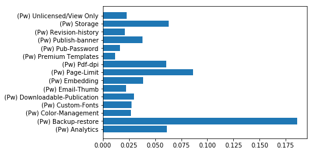
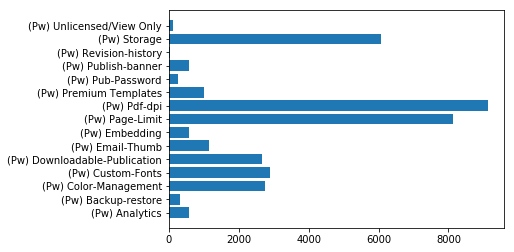

1. Which paywalls have the best conversion rate?
The best conversion rate paywall is Backup-restore, which has a
conversion rate of 18.59%.
Based on Ebbinghaus weighted average, the
conversion rate chart is as follows:

2. Which paywalls contribute most to revenue?
The paywall contributing most to revenue is Pdf-dpi, which contributes $9125.26 in total.
Based on Ebbinghaus weighted average, the revenue chart is as follows:

3. Based on your findings, do you have any recommendations for product
changes or further analysis?
Recommendations on product:
- Paywalls with higher conversion rate but lower revenue (e.g. Analytics, Backup-restore, Publish-banner, and Embedding) correspond to features which are very attractive
for customers but receive very few clicks. The reason might be the
following:
a. low frequency of paywall
b. ill-design of paywall
c. feature attracts a portion of customers very much
Product team should increase the frequency of the corresponding paywall or
redesign the popup window so that it shows the most attractive and accurate
feature. Or customize the paywall display for different customers.
-
Paywalls with lower conversion rate but higher revenue (e.g. Premium-Templates, Custom-Fonts, Color-Management, and Downloadable-Publication) correspond to
features which receive a bunch of click but only a small portion of them
really paid. The reason might be the following:
a. customers care the topic of the features very much.
b. customers are not very satisfied with the detailed features.
Product team should pay attention to the topic and develop more features
under those topics.
-
Paywalls with low conversion rate and revenue (e.g. Unlicensed/View only, Revision History, Sub-Password, and Email-Thumb)
correspond to features that are not important for most of the customers.
-
Paywalls with high conversion rate and revenue (e.g. Page-Limit, Pdf-dpi, and Storage) correspond key features that require
continuous attentions and efforts.
Recommendations on analysis:
- Group customers based on their subscription status and
make analysis respectively. This gives us more accurate results.
- Group customers with clustering algorithms (based on
their information). Perform analysis and apply different paywall display
strategies to customers in different clusters respectively.
- Based on historical data (basic information, geographic data, device
data, software usage data, paywall data, and payment data), use machine learning algorithms to make real-time prediction on the most interesting paywall for each customer.